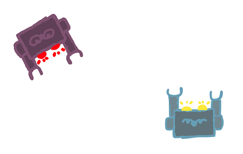
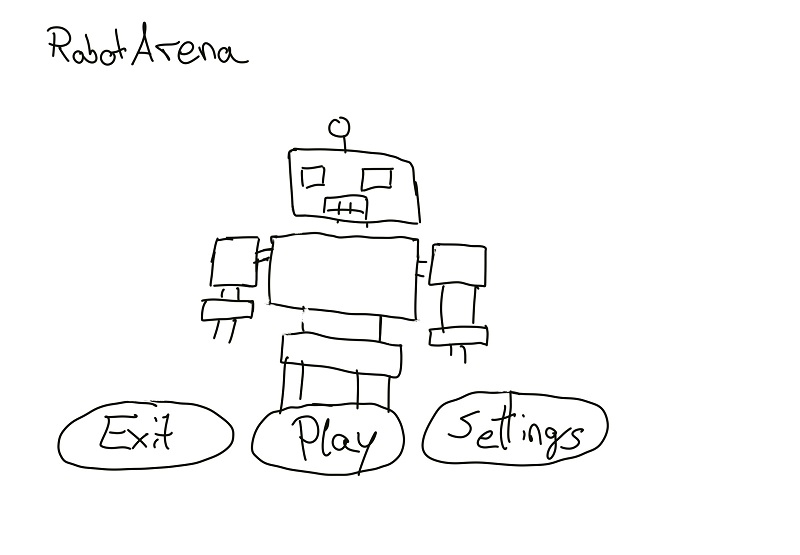
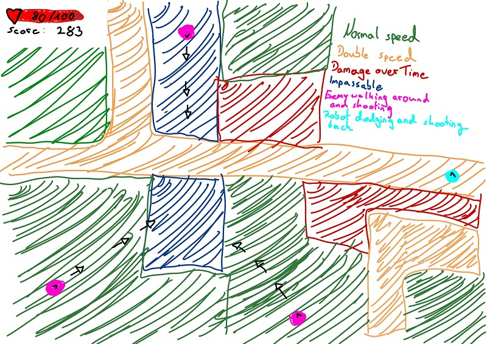
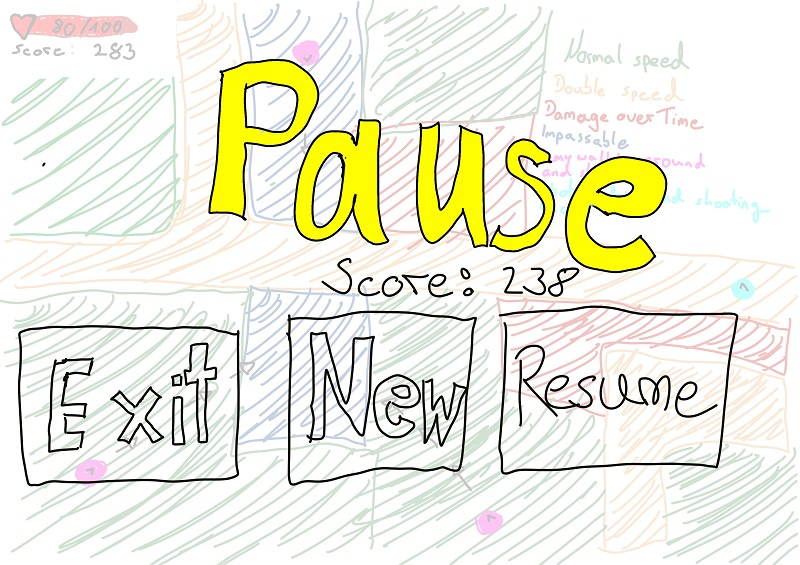

Implemented features
Fixed bugs or Problems
This week we had to sketch out the first instances of our game.
It will be a top view game where the player controls a robot, who can walk in four directions and shot forward.
There will be enemies which will walk around (randomly) and shot towards the player. More will appear over time
If one is hit it will lose HP. The score will rise by time or per enemy killed.
On higher difficultys there will appear more enemies and they will do more damage.
The MainMenu shows a Robot, the name of the game and some buttons
 
Creating the Pull Request.

Flake8 test running and possibility to comment PR.